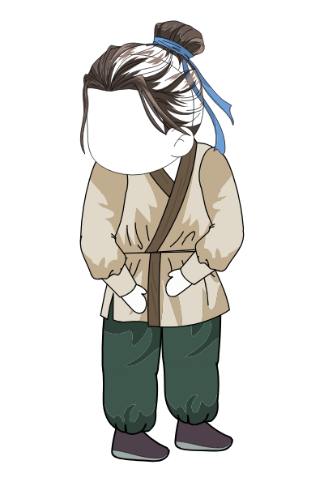
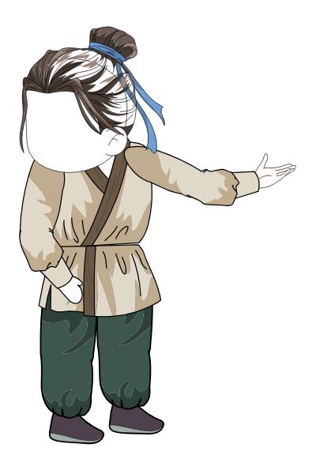
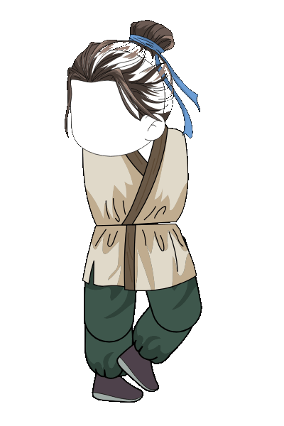

Tất cả các bộ phận (đầu, búi tóc, dải lụa, thân, tay, chân) đã được khớp nối chuẩn xác trong file flas/79 Người đàn ông nông thôn cổ đại 2_rigged.fla

Hai tay chắp tự nhiên trước bụng, tư thế đứng thẳng trang nhã
Frame 0 - 29
Tay phải đưa thẳng về phía trước chỉ hướng, tay áo vạt rộng mềm mại
Frame 30 - 59Hai chân quỳ gối, thân hơi cúi chào, hai tay chắp trang nghiêm
Frame 60 - 89
Chu kỳ bước đi tự nhiên 28 frame (loop vô tận), nhịp bước chân mượt mà
Loop 28 Frames (Frame 90 - 117)